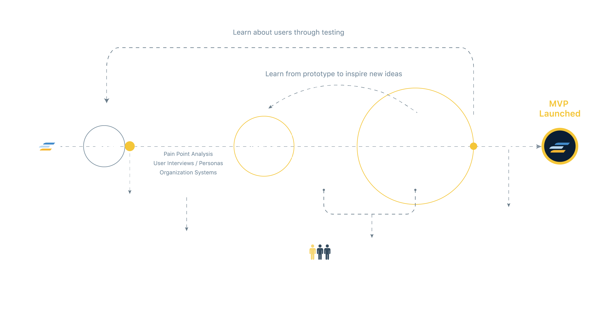
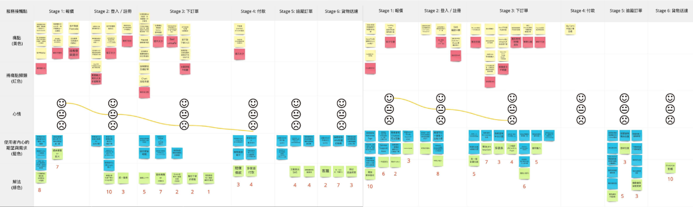
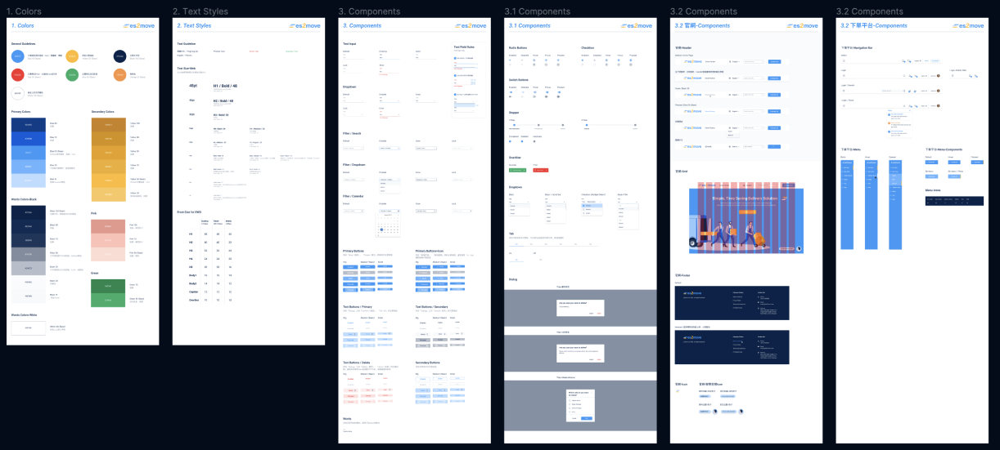

Es2Move is a Malaysia and Singapore’s shared logistics platform, which helps private companies and independent delivery partners to grow their logistics business. Users can also make quick orders online and get updates on all deliveries.
Overview
Committed to using the latest AI technology to combine action and digital medical care to enhance the medical service experience and create a personalized health management app.
Our team releases a new feature in only two weeks, including research, design, development, and launch. Therefore, each member needs high professional skills and communication skills.
Our team has a total of 10 members, two designers others are PO, PMs, Engineers.
I was responsible for UX research and UI design, from defining the features to delivering the final mockups.
In only 3 months, we achieved a rapid increase in the number of new users after app design improvement (3000% increase in MAU, +40% new users). My homepage design proposal was very successful in driving significant growth in new users on the app and got good user reviews in the App Store.
Redesign Process
Defined the required functions from the journey to ensure that users could easily find instructions, place orders, make payments, check statuses and receive packages, and made improvements based on feedback and business goals.
User Research
In the early stage of this project, I conducted user research and interviews to identify the core problems and get a sense of how users perceive our product. What are their expectations?
I also consolidated the research result and created personas based on what we learned from the interview. It helped the entire team better understanding who we're designing for and what would be the most important things we should focus on.
User Journey Map
Defined the required functions from the journey to ensure that users could easily find instructions, place orders, make payments, check statuses and receive packages, and made improvements based on feedback and business goals.
Through user research, interviews, workshop and data analysis, we deeply explored why the target users did not like to use Es2move to place orders, and uncovered their real needs in order to optimize the website and increase the utilization rate.
Design Iterations & Deliverables


We provided standard delivery and urgent (express) delivery options. The user could check and view the best price based on their needs. The system would give a more accurate cost estimate according to the type of goods selected by the user.
I also added order discount offers to incentivize users to place orders on the official website by letting users know that Es2move would meet their requirements at the lowest price. It also wired discount tags to attract users to place orders on the official website
As soon as a user selects the pricing rule, he is directed to the order page to fill in the remaining details, such as the recipient and company name. Users can also directly apply the company's main address to save time filling out the form, quickly complete the order, and view related information on all devices simultaneously.

Set up a simple, convenient mobile version of the homepage navigation to attract users.


Design System
I created UI components in Figma, I also use basic programming skills to build packages of UI components and to provide suitable libraries for front-end engineers, they can quickly apply the components, successfully reduce their workload.
Illustration